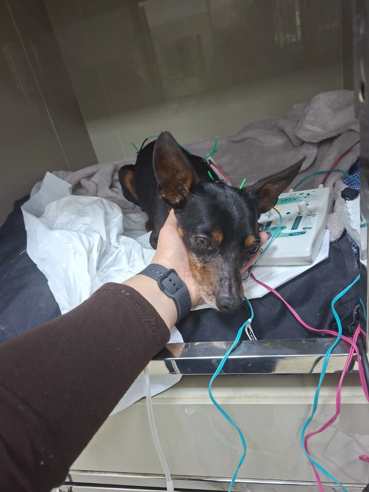
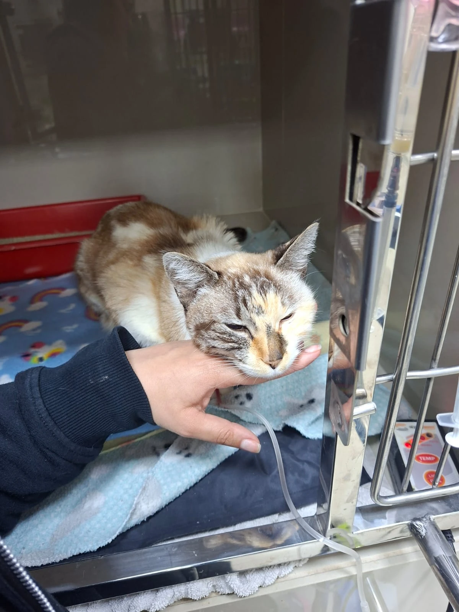
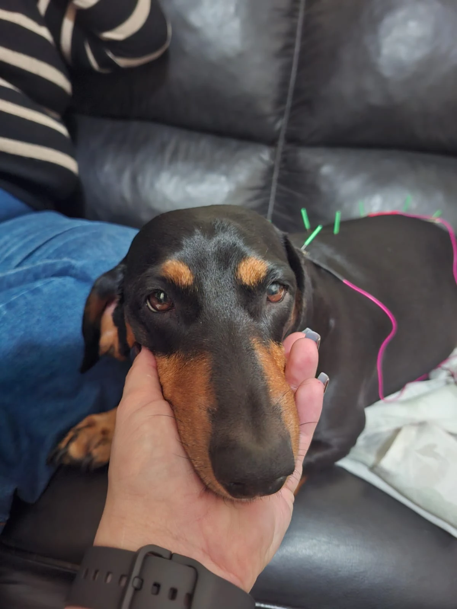
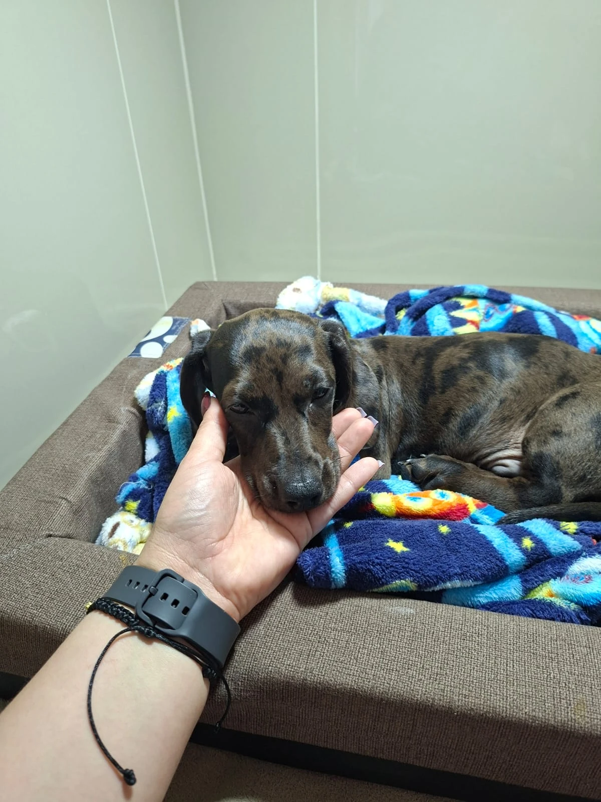
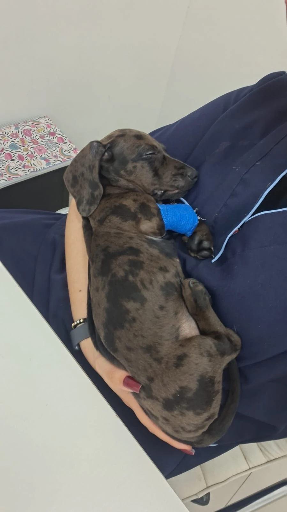
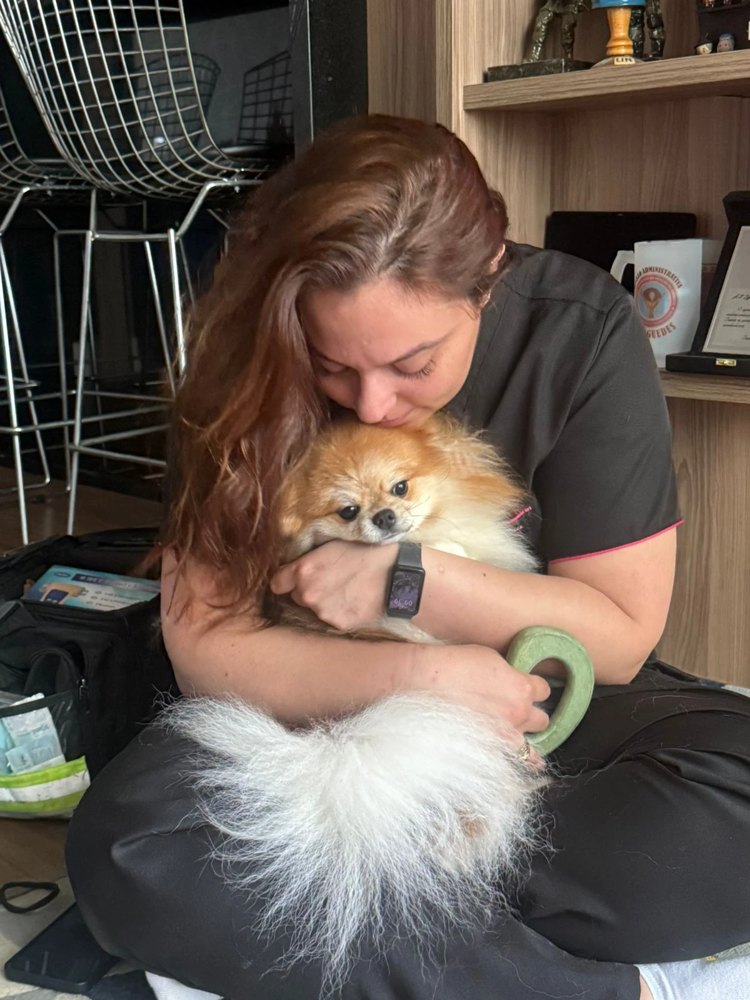

Medicina Veterinária Integrativa
Debora Gouveia
Médica Veterinária Professora Palestrante
Cuidado veterinário com técnica, sensibilidade e visão integrativa para apoiar a saúde e o bem-estar dos animais.
Atendimento a domicílio & parcerias clínicas
Experiência
Um resumo da trajetória
Sobre
Pouco sobre a Debora
Formada em 2020, com 6 anos de experiência, Debora une reabilitação, internação, intensivismo e educação veterinária em uma atuação próxima, técnica e acolhedora.
- Pós-graduação em Clínica de Pequenos Animais — UNIFIL Curitiba
- Pós-graduação em MVTC — IBRA SP
- Medicina Veterinária Integrativa — IBRAVET
- Estudante de Direito - FSA
- Atualizações em ozonioterapia, fisioterapia e intensivismo
Atuação
Principais frentes
Reabilitação
Internação
Intensivismo
Acadêmica
Clínica de Pequenos
Vacinação
Horsemanship
Fisioterapia em cavalo atleta
Registros
Um pouco da rotina

.jpeg)


.jpeg)
.jpeg)
.jpeg)
.jpeg)
.jpeg)

.jpeg)
.jpeg)
.jpeg)
.jpeg)
.jpeg)
.jpeg)







Fale com a Debora
Atendimento, orientações profissionais, aulas ou palestras.
Chamar no WhatsApp